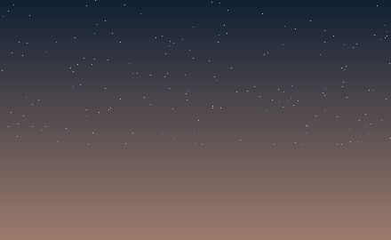
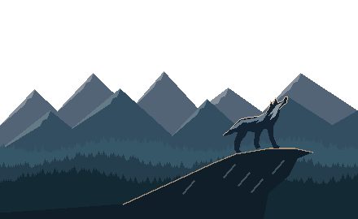

jun.dev / sobre-mi.md
Sobre mí.
La curiosidad es mi punto de partida.
Estudio ciberseguridad y trabajo de forma independiente dando soporte TI. Una de las cosas que más disfruto es seguir las pistas de un problema hasta poder explicar qué pasó.
Me interesan Linux, las redes y la seguridad de Windows. Mi objetivo es convertir ese interés en práctica documentada y compartir lo que descubro por el camino.

